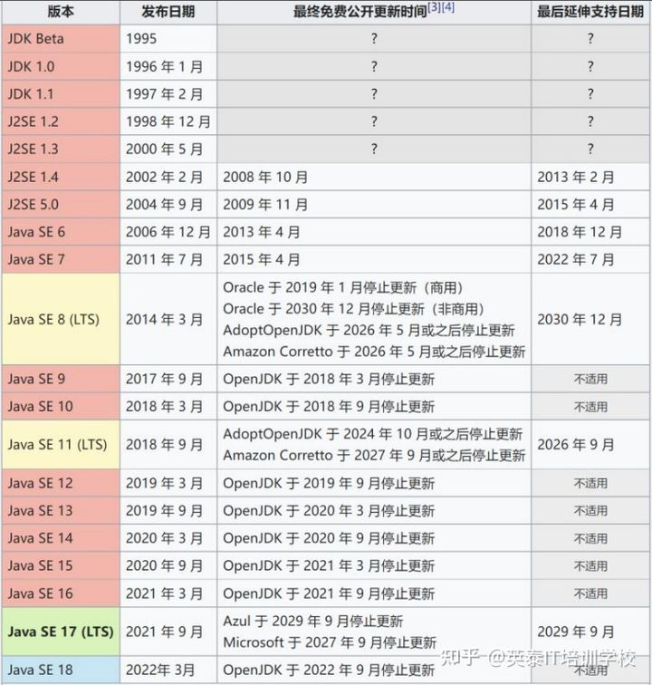

版本 #

| 版本 | 发布日期 |
|---|---|
| JDK 19 | 2022/09/20 |
| JDK 20 | 2023/03/21 |
版本+特性 [1] #
Java 1.4 #
- NIO（New I/O）
Java 5（Java 1.5） #
- 泛型
- 自动装箱/拆箱
- 枚举类型
Java 7 #
- Try-with-resources
Java SE 8（Java 8）- LTS长期支持版本 #
- Lambda 表达式：简化函数式编程。允许以更简洁的语法编写函数式接口的实例，使代码更加简洁。
- Stream API：用于处理集合，支持函数式操作，如过滤、映射和聚合。
- 方法引用：允许直接引用现有方法或构造函数，避免了重复编写类似的代码。
- 接口的默认方法：在接口中提供默认实现，提高接口的灵活性。
- 时间 API：提供了一组强大的时间操作类，简化了日期和时间的操作。
- 重复注解：允许在同一个地方多次声明同一个注解，提高了代码的可读性。
- CompletableFuture 类：简化异步编程，提供更好的错误处理和异常处理机制。
- Nashorn 引擎：提供了一种基于 JavaScript 的解决方案，允许将 JavaScript 代码嵌入到 Java 应用程序中。
- Optional 类：减少空指针异常，提高代码可读性。
Java SE 9（Java 9） #
- 模块系统（Project Jigsaw）：将 Java 的庞大代码库划分为可重用的模块，简化大型应用的构建和维护。
- JShell：Java 的交互式命令行工具，用于快速尝试和测试 Java 代码片段。
- 新的集合工厂方法：方便地创建不可变集合，如 List.of()、Set.of() 和 Map.of()。
Java SE 10（Java 10） #
- 局部变量类型推断：使用 var 关键字自动推断局部变量的类型，简化代码。
- 垃圾收集器接口改进：提高了垃圾收集器的可插拔性和灵活性。
Java SE 11（Java 11）-LTS长期支持版本 #
- 新的 HTTP 客户端 API：支持 HTTP/2 和 WebSocket，提供了更现代化的编程方式。
- 改进的垃圾收集：引入了 ZGC 和 Epsilon 垃圾收集器。
- String 类的新方法：如 lines()、isBlank()、strip() 等。
Java SE 12（Java 12） #
- switch 表达式：允许在 switch 语句中使用表达式，提高了代码的可读性和简洁性。
- 改进的字符串类：提供了一些新的方法，使得字符串的操作更加方便和高效。
- Shenandoah 垃圾回收器：提供了一种低停顿时间的垃圾回收器，适用于大型堆内存的应用程序。
- 微基准测试套件：提供了一种用于快速测试性能的微基准测试框架。
- JDK 源代码重构：对 JDK 源代码进行了重构，提高了代码的可读性和维护性。
Java SE 13 （Java 13） #
- 文本块：允许以更简洁的语法创建多行字符串，提高了代码的可读性和简洁性。
- 改进的 switch 表达式：允许在 switch 语句中使用表达式，提供更好的类型推断和更灵活的写法。
- ZGC 垃圾回收器改进：提高了 ZGC 垃圾回收器的性能和可靠性。
- 应用程序类数据共享改进：提高了应用程序类数据共享的性能和效率。
Java SE 14 （Java 14） #
2020年3月17日
- instanceof 模式匹配：允许在 instanceof 操作符中使用模式匹配，提高了代码的简洁性和可读性。
- Records 类：提供了一种更简单和安全的数据类的定义方式。
- Switch 表达式增强：允许使用箭头操作符(->)作为 lambda 表达式的简写语法。
- 文本块增强：允许在文本块中使用嵌入式表达式，使得文本块更加灵活和强大。
- 改进的 NullPointerException 信息：提供更详细的 NullPointerException 信息。
Java SE 15 （Java 15） #
- 隐式的类文件：允许在 Java 源代码中定义多个类，而不需要单独的类文件。
- 改进的文本块：允许在文本块中使用转义字符和 Unicode 转义，提高了文本块的灵活性和可读性。
- 改进的 switch 表达式：允许在 switch 语句中使用多个匹配项，提供更灵活的写法。
- Sealed 类和接口：允许控制哪些类或接口可以继承或实现该类或接口，提高了代码的安全性和可维护性。
- 其他改进：包括增强的 ZGC 垃圾回收器、改进的内存管理、新增的 Unix 域套接字 API 等。
Java SE 16 （Java 16） #
- 增强的文本块：允许在文本块中使用转义字符和嵌入式表达式。
- 移除了废弃的 ParallelScavenge 垃圾回收器。
- 改进的 ZGC 垃圾回收器：提高了性能和可靠性，增加了可配置参数。
- Records 类的增强：允许在 records 类中添加静态方法和私有构造函数。
- Vector API：提供了一种新的 API，用于高效地执行矢量化操作。
Java SE 17（Java 17）-LTS长期支持版本 #
- 嵌套枚举：允许在类和接口中定义嵌套枚举，提高了代码的可读性和简洁性。
- 改进的 switch 语句：允许在 switch 语句中使用 case 标签作为表达式，提供更灵活的写法。
- 预览性功能：包括模式匹配、嵌套枚举、记录类的序列化等新特性。
- 增强的垃圾回收器：提高了性能和可靠性，增加了可配置参数。
- 其他改进：包括新的内存管理和性能优化，增强的 JIT 编译器等。
Java SE 18（Java 18）[2] #
400：默认使用 UTF-8 408：简易 Web 服务器 413：Java API 文档中的代码片段 416：使用方法句柄重新实现核心反射 417：矢量 API 418：网络地址解析 SPI 419：外部函数和内存 API 420：switch 的模式匹配 421：废弃对象终止机制
Java SE 19（Java 19） [3] #
405: Record Patterns (Preview) 422: Linux/RISC-V Port 424: Foreign Function & Memory API (Preview) 425: Virtual Threads (Preview) 426: Vector API (Fourth Incubator) 427: Pattern Matching for switch (Third Preview) 428: Structured Concurrency (Incubator)
Java SE 20（Java 20） [4] #
429: Scoped Values (Incubator) 432: Record Patterns (Second Preview) 433: Pattern Matching for switch (Fourth Preview) 434: Foreign Function & Memory API (Second Preview) 436: Virtual Threads (Second Preview) 437: Structured Concurrency (Second Incubator) 438: Vector API (Fifth Incubator)
Java SE 21（Java 21） [5] #
430: String Templates (Preview) 431: Sequenced Collections 439: Generational ZGC 440: Record Patterns 441: Pattern Matching for switch 442: Foreign Function & Memory API (Third Preview) 443: Unnamed Patterns and Variables (Preview) 444: Virtual Threads [6][7] 445: Unnamed Classes and Instance Main Methods (Preview) 446: Scoped Values (Preview) 448: Vector API (Sixth Incubator) 449: Deprecate the Windows 32-bit x86 Port for Removal 451: Prepare to Disallow the Dynamic Loading of Agents 452: Key Encapsulation Mechanism API 453: Structured Concurrency (Preview)
特性 [8] #
文字块 text blocks | JDK 13-JDK 15 #
String textBlock = """
<!DOCTYPE html>
<html>
<body>
<h1>"Hello World!"</h1>
</body>
</html>
""";
System.out.println(
"Here is the text block:\n" + textBlock);
record 档案类 [不可变] | JDK14-JDK16 #
public record Circle(double radius) implements Shape {
@Override
public double area() {
return Math.PI * radius * radius;
}
}
sealed classes 封闭类 [扩展性] | JDK 15-JDK 17 #
public abstract sealed class Shape permits Circle, Square {
public final String id;
public Shape(String id) {
this.id = id;
}
public abstract double area();
}
类型匹配 [切除臃肿的强制转换] | JDK 14-JDK 16 #
if (shape instanceof Rectangle rect) {
return (rect.length == rect.width);
}
switch 表达式 [简化多情景操作] | JDK 12-JDK 14 #
int daysInMonth = switch (month) {
case Calendar.JANUARY,
Calendar.MARCH,
Calendar.MAY,
Calendar.JULY,
Calendar.AUGUST,
Calendar.OCTOBER,
Calendar.DECEMBER -> 31;
case Calendar.APRIL,
Calendar.JUNE,
Calendar.SEPTEMBER,
Calendar.NOVEMBER -> 30;
case Calendar.FEBRUARY -> {
if (((year % 4 == 0) && !(year % 100 == 0))
|| (year % 400 == 0)) {
yield 29;
} else {
yield 28;
}
}
default -> throw new RuntimeException(
"Calendar in JDK does not work");
};
switch匹配 [适配不同的类型] | JDK 17-21 #
public static boolean isSquare(Shape shape) {
return switch (shape) {
case null, Shape.Circle c -> false;
case Shape.Square s -> true;
};
}
外部内存接口 | JDK18-? #
-
ByteBuffer && 零拷贝 使用堆外存储最常用的办法，就是使用 ByteBuffer 这个类来分配直接存储空间（direct buffer）。JVM 虚拟机会尽最大努力直接在直接存储空间上执行 IO 操作，避免数据在本 地和 JVM 之间的拷贝。 由于频繁的内存拷贝是性能的主要障碍之一。所以为了极致的性能，应用程序通常也会尽 量避免内存的拷贝。理想的状况下，一份数据只需要一份内存空间，这就是我们常说的零 拷贝。
用 ByteBuffer 这个类来分配直接存储空间的方法
public static ByteBuffer allocateDirect(int capacity);第一个缺陷是没有资源释放的接口。 第二个缺陷是存储空间尺寸的限制。
-
外部内存接口
try (ResourceScope scope = ResourceScope.newConfinedScope()) {
MemorySegment segment = MemorySegment.allocateNative(4, scope);
for (int i = 0; i < 4; i++) {
MemoryAccess.setByteAtOffset(segment, i, (byte)'A');
}
}
外部函数接口[取代Java本地接口] | JDK 17-? #
public class HelloWorld {
public static void main(String[] args) throws Throwable {
try (ResourceScope scope = ResourceScope.newConfinedScope()) {
CLinker cLinker = CLinker.getInstance();
MemorySegment helloWorld =
CLinker.toCString("Hello, world!\n", scope);
MethodHandle cPrintf = cLinker.downcallHandle(
CLinker.systemLookup().lookup("printf").get(),
MethodType.methodType(int.class, MemoryAddress.class),
FunctionDescriptor.of(CLinker.C_INT, CLinker.C_POINTER));
cPrintf.invoke(helloWorld.address());
}
}
}
GC #
G1, ZGC, 分代式 ZGC
参考 #
- Java各个版本发布时间和主要特性整理！ Java 历史大版本及其详细特性介绍:
- Java 18 的新特性
- JDK 19
- JDK 20
- JDK 21
- Java19 虚拟线程原理介绍及实现 ***
- Java虚拟线程：异步编程之死
- 《深入剖析 Java 新特性》 范学雷 02,03,04,05,06,07,08,09,12, 13
- 从Java 11升级到Java 17 V 未